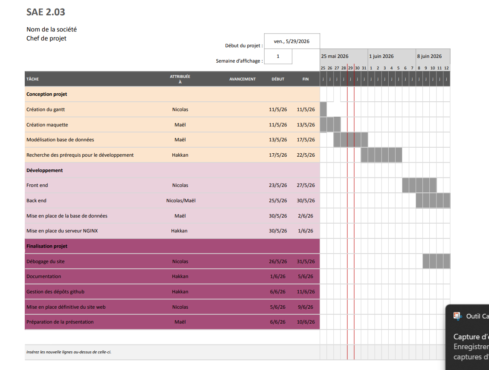
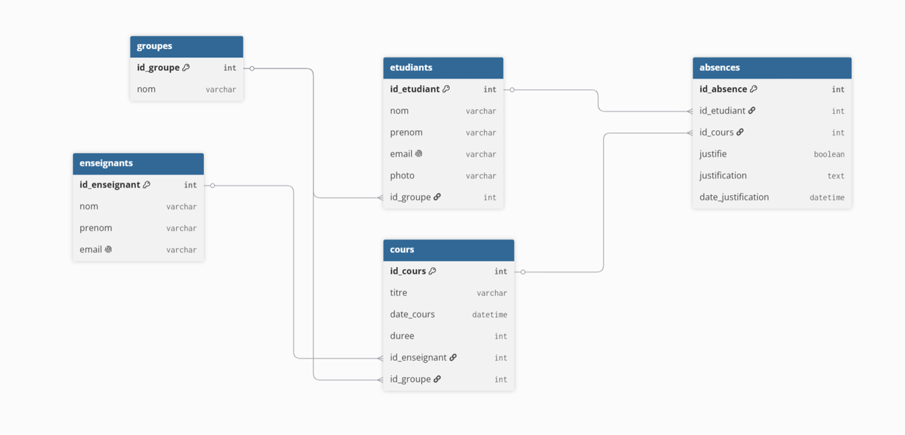
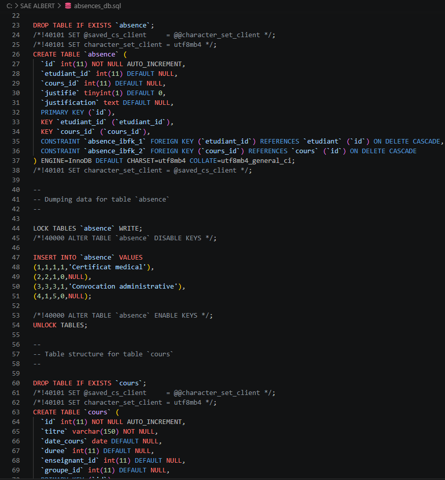
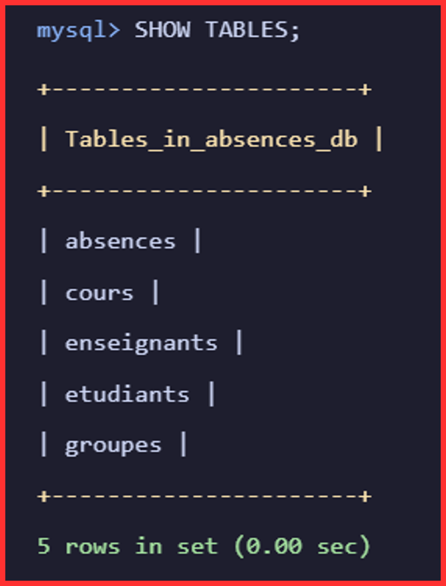
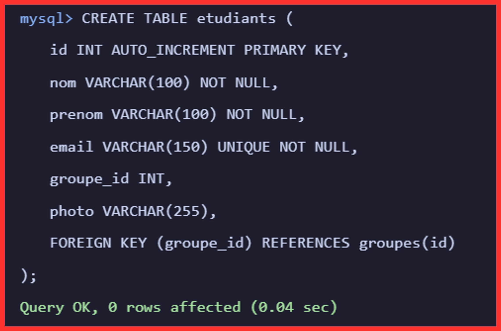
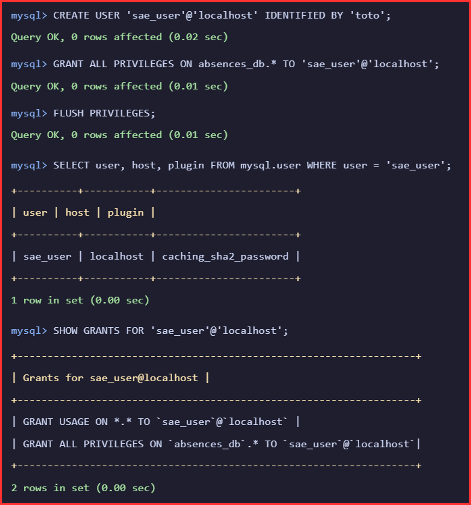
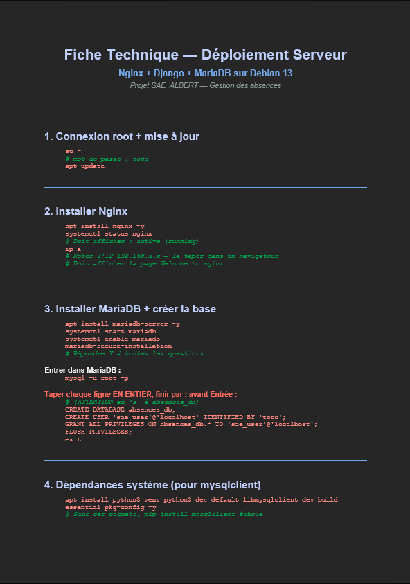

🧠 Contexte du projet
Dans le cadre de cette SAÉ, nous devions concevoir et développer une application web permettant
de gérer les absences d’étudiants. L’objectif était de créer une solution complète, capable de
stocker des données dans une base MySQL, de les afficher dans une interface web et de permettre
leur consultation ou leur modification selon le profil de l’utilisateur.
Ce projet nous a placés dans une situation proche d’un développement professionnel : analyse du
besoin, modélisation de la base de données, développement avec Django, création des interfaces,
organisation du travail en groupe et suivi de l’avancement avec des outils collaboratifs.
🛠 Tâches réalisées personnellement
Dans ce projet, j’ai principalement travaillé sur la partie base de données et sur l’organisation du travail.
J’ai d’abord réalisé le schéma relationnel de la base de données afin de structurer les différentes informations
nécessaires au fonctionnement du gestionnaire d’absences.
Création du schéma relationnel de la base de données.
Réalisation du diagramme de Gantt pour organiser et planifier les étapes du projet.
Mise en place de la machine virtuelle destinée à héberger la base de données.
Installation et configuration de MySQL / MariaDB sur l’environnement de travail.
Création des tables dans la base de données.
Ajout de données de test, notamment un utilisateur administrateur.
Configuration de la connexion entre l’application Django et la base de données.
Exportation du fichier de base de données afin de conserver et partager la structure du projet.
Participation à la préparation de la présentation orale de la SAÉ et du support PowerPoint.
Ces tâches m’ont permis de mieux comprendre le rôle central de la base de données dans une application web.
J’ai également progressé dans la mise en place d’un environnement de développement complet, reliant une machine
virtuelle, un serveur de base de données et une application Django.
🎓 Compétences R&T mobilisées et acquises
AC13.04 — Connaître l’architecture et les technologies d’un site web :
ce projet m’a permis de mieux comprendre le fonctionnement d’une application web dynamique,
avec une séparation entre les vues, les modèles, les templates et la base de données.
AC13.05 — Choisir les mécanismes de gestion de données adaptés :
la création du schéma relationnel MySQL m’a aidé à comprendre l’importance d’une base de
données bien structurée pour gérer correctement les absences, les utilisateurs et les rôles.
AC13.06 — S’intégrer dans un environnement de développement collaboratif :
l’utilisation de GitHub et d’outils de planification m’a permis de mieux organiser mon travail,
de suivre l’avancement du projet et de collaborer plus efficacement avec les autres membres du groupe.
AC13.02 — Lire, exécuter, corriger et modifier un programme :
le développement avec Django m’a demandé de comprendre le code existant, de corriger certaines erreurs
et d’adapter les fonctionnalités aux besoins du projet.
🖼 Éléments de preuve
Les captures ci-dessous montrent les différentes étapes du projet : la planification, la modélisation
de la base de données, l’application développée et le rapport de projet. Elles permettent de justifier
le travail réalisé et les compétences acquises pendant la SAÉ.

Planification du projet et répartition du travail dans le temps.

Modélisation du schéma relationnel de la base de données.

Fichier source SQL exporté via la DB.

Commande montrant les tables crées.

Exemple de création de table "étudiants".

Création de l'utilisateur admin et mise en place des droits.

Extrait du rapport permettant de documenter la démarche suivie.
💡 Bilan réflexif personnel
Ce projet m’a permis de comprendre plus concrètement le lien entre une base de données, un backend
et une interface web. J’ai notamment pris conscience de l’importance d’un schéma relationnel clair :
si les données sont mal organisées au départ, le développement des fonctionnalités devient plus complexe.
En travaillant sur l’interface et sur l’organisation du projet, j’ai aussi progressé dans ma capacité
à rendre une application plus lisible et plus simple à utiliser. Le travail en groupe m’a montré
l’importance de bien communiquer, de répartir les tâches et de documenter les choix techniques pour
avancer efficacement.
🇬🇧 Short English summary
This project consisted in developing a web application to manage student absences using Django and
a MySQL database. I contributed to the application architecture, database modeling, interface design
and collaborative project organization. This SAE helped me improve my understanding of dynamic web
development, data management and teamwork with GitHub.